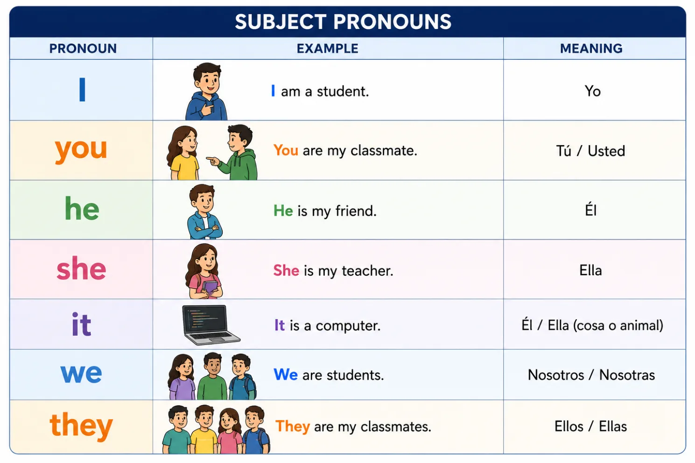
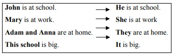
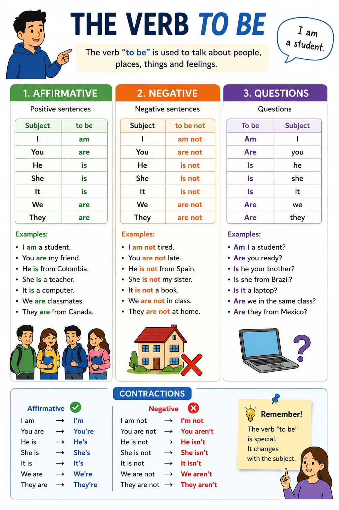
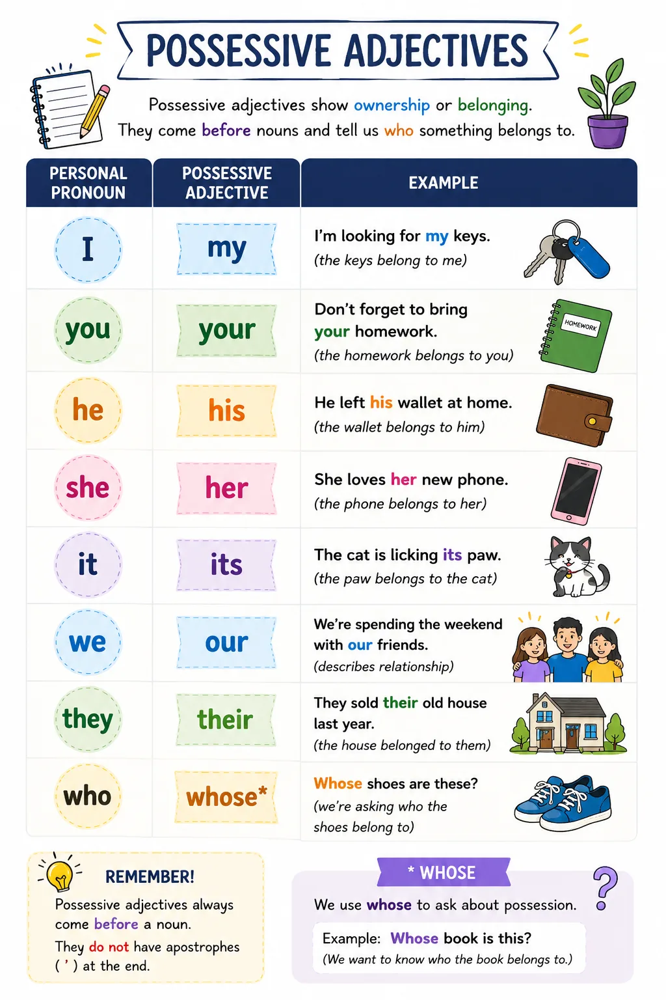
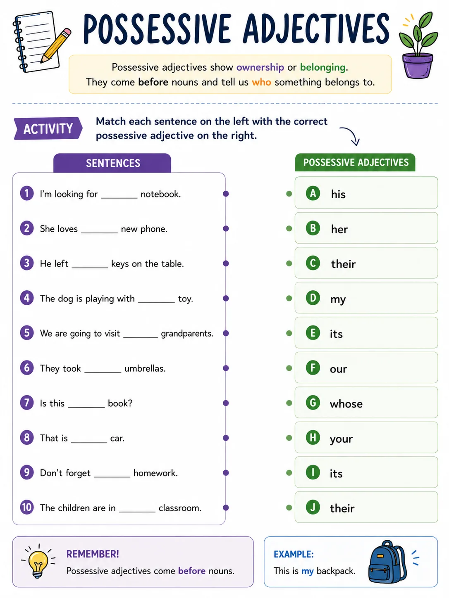
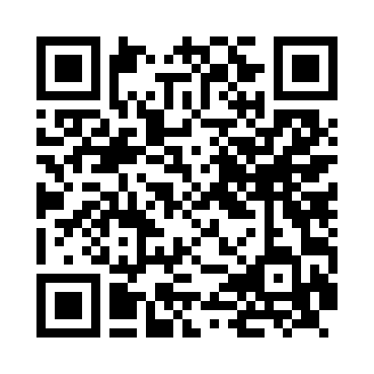
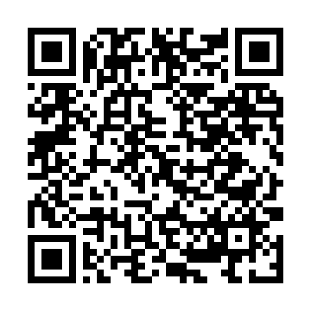
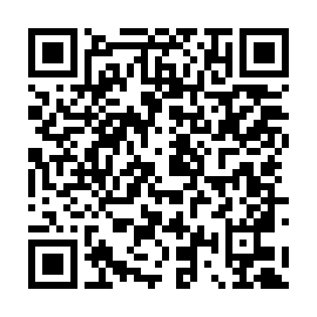
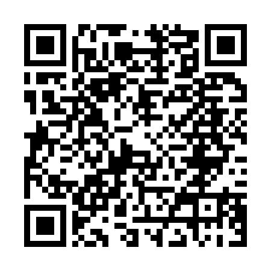
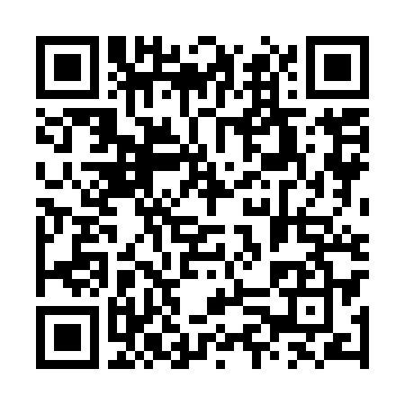

🧠 I am, you are, he is... let's build sentences!
Una vez aprendemos a saludar y presentarnos, el siguiente paso es construir oraciones que nos permitan hablar sobre nosotros mismos y otras personas. Para lograrlo, es fundamental conocer el verbo to be, uno de los verbos más importantes del idioma inglés.
Con el verbo to be podrás expresar información básica como tu nombre, edad, nacionalidad, profesión o programa académico. Además, aprenderás a utilizar los subject pronouns (I, you, he, she, it, we, they) y los possessive adjectives (my, your, his, her, its, our, their), estructuras esenciales para comunicarte de forma clara y correcta.
En esta guía descubrirás cómo usar estas estructuras mediante ejemplos sencillos y situaciones relacionadas con la vida universitaria y el entorno tecnológico. Al finalizar, podrás escribir y comprender oraciones básicas en inglés con mayor seguridad y confianza. 💪
✨ "I am", "you are", "he is"... small words, big power: with them puedes describir a cualquier persona o cosa en inglés. 🚀
Objetivos de aprendizaje
- 🧩 Emplear el verbo to be, los subject pronouns y los possessive adjectives en la construcción de mensajes sencillos en inglés.
- 💬 Comunicar información personal y académica mediante expresiones relacionadas con la presentación personal y la descripción de personas en contextos cotidianos, universitarios y vinculados con el desarrollo de software.
🔍 Modo exploración: recorre las 5 estaciones y suma puntos
⭐ Puntos: 0
Actividades
🎮 Modo misión activado — completa las 3 misiones
🏅 Misiones: 0/3
📝 Misión 1: Write — Substitute the subjects with pronouns


Substitute the subjects with pronouns.
📝 Misión 2: Write — Complete with am, are, or is

Complete the following sentences with am, are, or is.
🔗 Misión 3: Match — Possessive Adjectives


Match each sentence with the correct possessive adjective (write it in the blank).
Evaluación
Comprueba lo que has aprendido. Selecciona la respuesta correcta para cada pregunta.
Recursos para profundizar
Para ampliar tu conocimiento, te recomendamos explorar los siguientes recursos:
-
Present Simple Verb To Be Exercises (MyEnglishPages)
Ejercicios con respuestas para practicar am, is, are en el presente simple.
Ir al recurso
-
Present simple forms of "to be" (Test-English)
Explicación de gramática y test de nivel A1 sobre am/is/are.
Ir al recurso
-
Froggy Jumps: Subject Pronouns (Educaplay)
Juego interactivo para practicar subject pronouns eligiendo el sujeto correcto.
Ir al recurso
-
Possessive Adjectives Exercises (MyEnglishPages)
Práctica de gramática para principiantes sobre possessive adjectives.
Ir al recurso
-
Possessive Adjectives Test (learnEnglish-online)
Quiz de 10 preguntas para practicar possessive adjectives y obtener puntaje perfecto.
Ir al recurso
Bibliografía
https://learnenglish.britishcouncil.org/free-resources/grammar/english-grammar-reference/personal-pronouns
https://learnenglish.britishcouncil.org/free-resources/grammar/english-grammar-reference/possessives-adjectives
https://learnenglish.britishcouncil.org/free-resources/grammar/a1-a2/present-simple-be
https://owl.purdue.edu/owl/general_writing/grammar/pronouns/pronoun_case.html